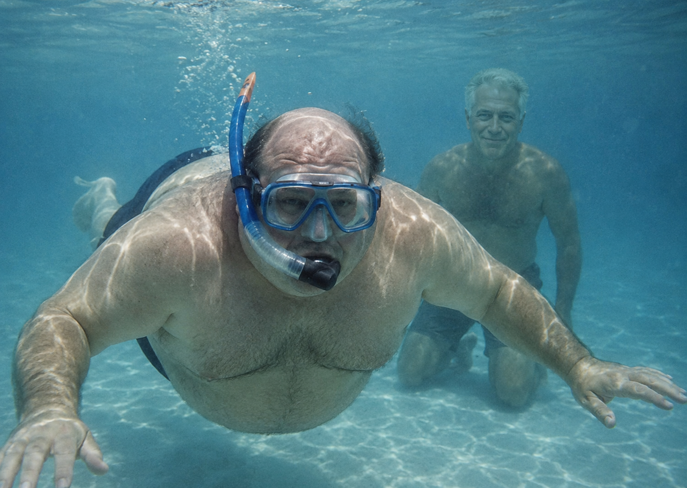

How It All Started
Dan Carter never planned on creating a database company. His original dream was becoming a professional poker player, but after a series of terrible bets and questionable decisions like being friends with jeffrey epstein and going to his island to as Dan said under in the courts snorkeling, he ended up broke and unemployed.
Things got even worse after he slipped on ice outside a grocery store and woke up in a hospital with a minor concussion.
While recovering, a hospital employee accidentally confused Dan for a database technician who was supposed to fix the hospital's patient database system.
Instead of correcting them, Dan looked at the broken computers and said, "Honestly... screw it, how hard can databases be?"
After spending the next eight hours watching online tutorials, randomly clicking buttons, and somehow fixing the issue, the hospital actually paid him.
Dan realized databases were easier than poker, and in 2012 he officially founded Dan's Database Solutions Inc.
Today the company specializes in database indexing, optimization, cloud migration, and helping businesses fix problems caused by people who also randomly clicked buttons.
